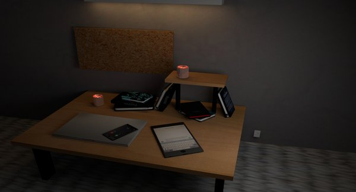
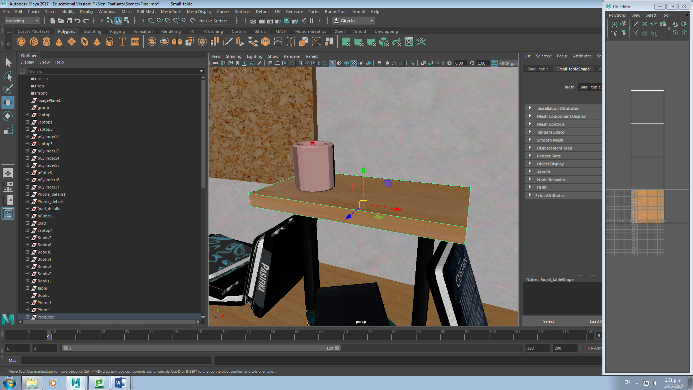
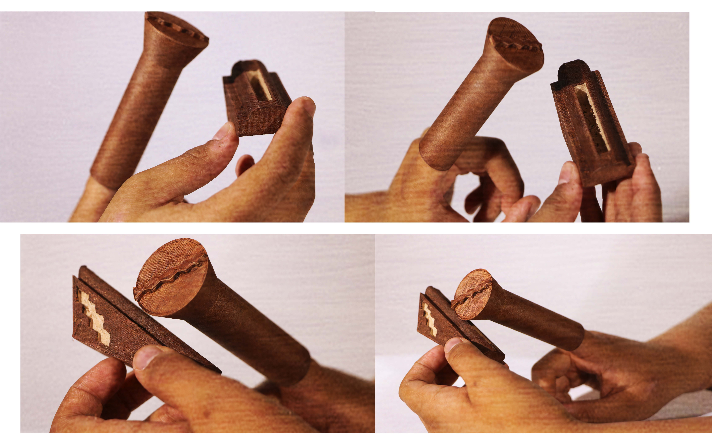
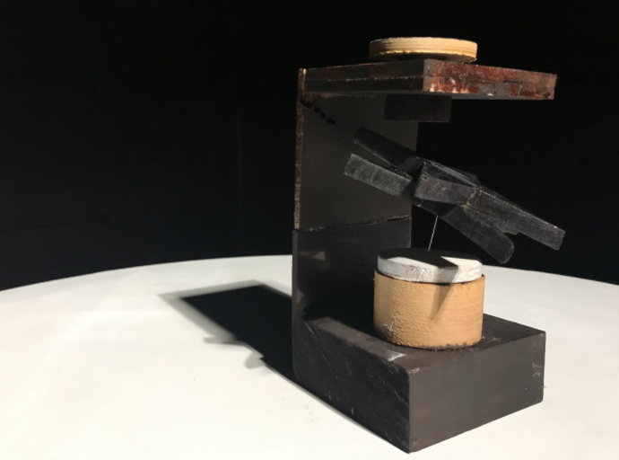
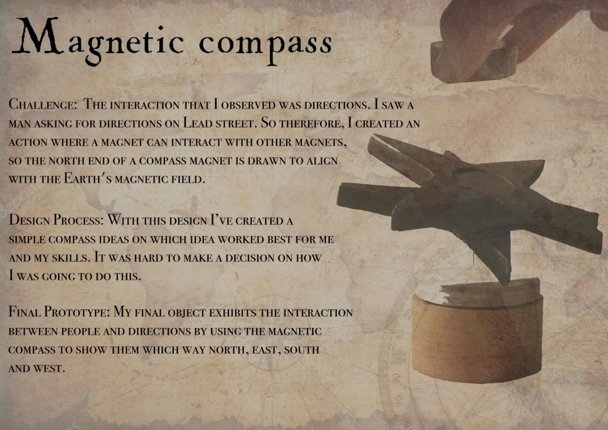

Sieni Faafuata
PROJECTS
- 
- 

- 
- 
- 

My Progress at Victoria University of Wellington Throughout my years at Victoria University I would say that I have improved a lot not just as a student but as a designer. I came into design not knowing much about coding and most softwares such as photoshop, premeier pro etc. Being able to grow and to develop helps me become more creative within the media platform. It helped me be to more open minded and to use the resources out there in the world. Now I can say that my strengthes is creativity. Throughout my work the most influenced is my culture and being able to design it in another perspective within media design is crazy and also different.
- Skills: HTML/CSS, MAYA, P5 JS, PHOTOSHOP
- Share: imsieni101